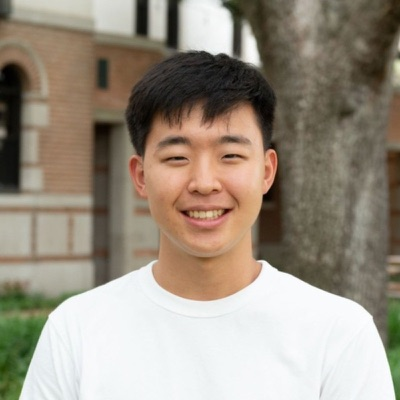

About
Hi! I am a Ph.D. student in Computer Science at Rice University, advised by Dr. Lydia Kavraki. My research focuses on generative models and molecular world models for proteins, with applications in protein dynamics, molecular simulation, and structure-based reasoning.
Before my Ph.D., I earned B.S. degrees in Computer Science and Biosciences at Rice, where I developed computational methods for metagenomics and microbial genomics with Dr. Todd Treangen. I also worked as an AI Engineer at CellChorus and as a SWE Intern at AbbVie.
Publications
- Omi: Bridging the Informatics to Bio Gap with a Natural Language Co-pilot
- Single-cell proliferation assay enables rapid and quantitative donor screening Abstract
- Olivar: towards automated variant aware primer design for multiplex tiled amplicon sequencing of pathogens Paper Code
- Parsnp 2.0: scalable core-genome alignment for massive microbial datasets Paper Code
Awards
- NSF Graduate Research Fellowship 2026